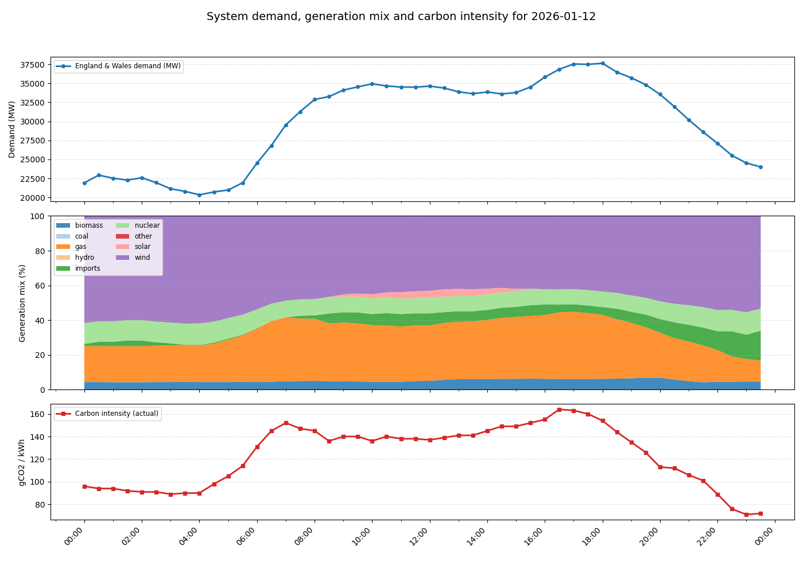
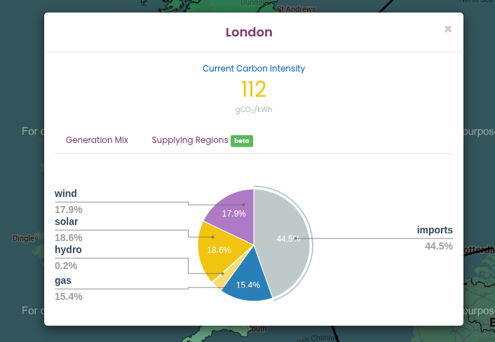
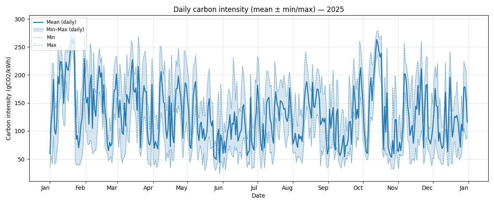
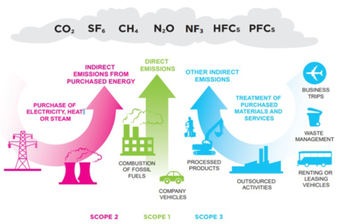

Energy, power and carbon
Last updated on 2026-07-23 | Edit this page
Estimated time: 40 minutes
Overview
Questions
- What is the difference between energy and power, and how are they measured?
- How does carbon intensity of electricity vary throughout the day and year, and what causes this variation?
- What is the difference between embodied carbon and operational carbon emissions?
- How does the Greenhouse Gas (GHG) Protocol categorize different types of emissions?
Objectives
- Calculate energy consumption and power usage using appropriate units.
- Explain how the energy mix affects grid carbon intensity and why renewable sources are prioritized when available.
- Distinguish between embodied and operational carbon emissions, and classify emissions using the GHG Protocol’s three scopes.
- Apply the concept of demand shifting to reduce carbon emissions by timing computational work during low carbon intensity periods.
Energy and power
Energy is a physical property that can be used to do work. This can be lifting a weight, pushing a piston or even running a computation on a computer. The SI unit of energy is the Joule (J) but commonly the kilowatt-hour (kWh) is also used when expressing electrical energy use.
Power is a rate at which energy is drawn i.e., how much energy is used in a given amount of time. The SI unit of power is the watt (W) however kilowatts (kW) are commonly used as well.
Joules, kilowatts and kilowatt-hours
The units used for power and energy can be confusing, particularly kilowatt-hours as a unit of energy. A useful relation to bear in mind is that \(1 W = 1 J/s\). By multiplying watts by another unit of time we recover units of energy with a scaling factor.
Kilowatt-hours are commonly used because they tend to work out nicely for everyday situations, e.g. a kettle may have a power rating of 1 kW so running it for an hour gives 1 kWh of electrical energy used.
Practising units of power and energy
Which of the below are not equal to 1 kWh.
- A - 200 W drawn for 12 minutes.
- B - 1000 J
- C - 3,600,000 J
- D - 5000 W drawn for 12 minutes.
- A - 0.2 kW x 0.2 hours = 0.04 kWh
- B - 1000 J = 0.00027 kWh
- C - 3,600,000 J = 1 kWh
- D - 5 kW x 0.2 hours = 1 kWh
Energy sources and carbon emissions
Energy famously cannot be created or destroyed but the electrical energy used for research activities has to come from somewhere. In practice the majority of electrical energy used for digital research comes from a national electricity grid so this will be our focus.
The electrical grid serves to transport electrical energy from electricity generators to end users. Economies of scale tend to mean that electricity generation is a large scale activity. The electrical energy supplied to the grid comes from a variety of different sources. This can be fossil fuels like coal and gas or green energy sources like solar and wind.
A key feature of electrical grids is that supply must be balanced with demand. Demand for electricity can vary greatly throughout a year or even an individual day. The grid responds to increases in demand by purchasing additional electricity from suppliers.
Energy Mix and Carbon Intensity
Different methods of electricity generation have different properties. Some of the important include:
- Cost - The cost of generating each kWh of energy.
- Carbon Intensity - A measure of the kgCO₂e emitted per kWh of energy.
- Dispatchability - How easily or quickly generation can be scaled up in response to demand.
- Predictability - How easy it is to predict the amount of generation available.
The table below provides a quick summary of how different energy sources compare on their key properties:
| Energy source | Cost | Carbon intensity | Dispatchability | Predictability |
|---|---|---|---|---|
| Gas | Medium | Medium | High | High |
| Solar | Low | Low | Low | Low |
| Wind | Low | Low | Low | Low |
| Nuclear | High | Low | Medium | High |
| Hydro | Variable | Low | Variable | High |
While solar and wind are very good in terms of cost and carbon intensity, they are unable to respond effectively to changes to demand. Gas, and to some extent, nuclear, while less appealing otherwise, can respond to these quick changes and hence complement green sources.
The energy sources used by the grid will change on an hourly timescale and some sources such as wind and solar can be subject to seasonal and climate effects. The relative cost of different sources can also be impacted by global events and markets. The sources of electricity used by the grid are referred to as the energy mix. The energy mix of the grid leads to an overall carbon intensity value given as gCO₂/kWh of electricity generated. This can also be broken down by geographical region or given as an average for a time period.
Green Energy Costs
A key aspect to note is that renewable sources of electricity generation are usually the cheapest option so the electricity grid will always try to minimise costs by using renewable sources where possible. This shows that if we can shape our demand for electricity to times where more renewable energy is available we both reduce emissions and provide an economic drive for more investment in renewable sources and less investment in sources of electricity generation based on fossil fuels.
Carbon Intensity in the UK
The following graphs show a typical UK day in 2026.

The following dynamics are at play:
- At midnight initial energy demand and carbon intensity is low.
- Around 5am, energy usage begins to increase as people wake up and businesses open. As demand increases, the proportion of gas in the energy mix increases as more gas generation is brought online to keep the grid balanced. This also drives an increase in carbon intensity.
- Carbon intensity peaks in the morning around 7am. Although energy demand continues to rise, gas usage and carbon intensity drop slightly as cheaper imported energy becomes available. Slightly later a small amount of solar power also becomes available as the sun rises.
- Demand remains steady throughout the day before increasing in the evening. This is driven by domestic usage as people come home, cook and use domestic appliances. Again additional gas generation is brought online to meet the demand and carbon intensity rises to its peak value.
- As the evening progresses and people go to bed, demand drops again and carbon intensity also falls as gas generation goes offline. Overall carbon intensity ends up lower at the end of the day than the beginning as more imported energy is available.
Real-time Carbon Intensity
- On your laptop or your phone, open https://carbonintensity.org.uk/
- Look at the current carbon intensity for our region right now. Which energy source do you think is currently marginal (‘filling the gap’ to meet demand)?
The marginal source is the most expensive source needed to meet demand. On days with lower intensity the marginal power source is usually the one with the highest dispatchability. For example, renewables are almost always used first, while nuclear energy could be more difficult to turn off. In contrast, gas is expensive but has high dispatchability.

Looking at the Generation Mix in the pie chart obtained from https://carbonintensity.org.uk/ on a sunny day in London:
- Wind (17.9%) and Solar (18.6%): These have very low variable costs. If it is windy or sunny, the grid uses all of this energy this energy first.
- Imports (44.5%): These are usually scheduled in advance based on international contracts. While they can be marginal, they can’t be as easily switched on and off.
- Gas (15.4%): High dispatchability, and can be ‘increased’ if the grid needs an immediate increase in supply.
Takeaways
The pattern shown is typical for a day in the UK. There are however many other factors that can determine the relationship between demand and carbon intensity which can play out at a variety of timescales.
There is considerable variability in the carbon intensity of electricity throughout the day - a factor of two in the above example. A simple strategy to reduce the emissions from digital research is therefore to shift electricity usage to times when carbon intensity is low. This is known as demand shifting. A simple rule of thumb is to favour running computationally intensive work at night.
Gas is a key part of the UK’s energy mix because of it’s dispatchability i.e., it’s ability to rapidly respond to changes in demand. Some green technologies like solar and wind have low dispatchability as they depend on factors like the weather.

The above graph demonstrates how carbon intensity can vary throughout the year in the UK. For the UK season is not a strong driver of carbon intensity. It is interesting to observe that the minimum and maximum carbon intensity of the grid can vary between ~50 gCO₂/kWh and ~250 gCO₂/kWh, a factor of five.
Carbon Intensity Forecasts
For the UK there are publicly available forecasts for the carbon intensity available at https://carbonintensity.org.uk.
Data sources
The above graphs were generated from publicly available data provided by the National Energy System Operator. Data was sourced from the UK Carbon Intensity API and the NESO Data Portal. The scripts used to generate the graphs available on GitHub in ImperialCollegeLondon/digital_research_sustainability_visualisations.
Embodied carbon and carbon awareness
So far we’ve focussed on the relationship between carbon emissions and electricity usage. This is relevant to the operation of equipment used in digital research and is usually the dominant component of the operational carbon. Another key source to consider however are embodied emissions.
Embodied carbon is the greenhouse gas emissions produced during the full lifecycle of a product or system before it starts being used: raw material extraction, manufacturing, transport, construction and eventual disposal or recycling. It represents the “upfront” carbon locked into goods and infrastructure. Accounting for embodied carbon helps teams choose lower‑carbon options by considering repair, reuse, material choices and service life in addition to operational energy use.
We’ll discuss in detail the embodied carbon contributions associated with digital research activities in the next episode.
The Greenhouse Gas (GHG) Protocol and how to use it
So far we’ve discussed several sources of emissions. A key requirement to managing and reducing emissions is to measure and account for them. The Greenhouse Gas Protocol provides a framework for identifying and categorising different emission sources. It’s holistic and covers both direct and indirect emission sources.
The GHG protocol breaks down emissions into three categories called scopes:
Scope 1 are direct emissions. These come from activities that directly emit carbon such as burning fuel. This would cover fuel used in a vehicle or an on-site heating system or electricity generation.
Scope 2 are indirect emissions. These come activities that draw energy produced elsewhere. This is primarily the emissions associated with electricity generation covered in detail above.
Scope 3 are “Value chain emissions”. These come from everything upstream i.e., requirements you need to carry out research activities and everything downstream i.e., emissions associated with the use of your research outputs, even by others. Upstream emissions includes things like the embodied emissions of hardware whilst downstream emissions might include use of software or data you’ve created.
The GHG protocol is most often applied to businesses, countries or cities but it can be applied at any scale including an individual or research group. It’s easy to get hung up on which scope to place emissions in but perhaps the key takeaway is to take a broad view of different emissions sources.

Emission types
Based on the GHG Protocol, categorise each of the following activities as Scope 1, Scope 2, or Scope 3.
- Powering your laptop
- Running simulations on a cloud provider
- A return flight to a conference in New York
- University-owned car that transports equipment
- Recycling an old laptop
- Leaking Ultra-low temperature (ULT) freezer
| Activity | Scope | Justification |
|---|---|---|
| 1. Powering your laptop | Scope 2 | Indirect emissions from energy purchased and used by the lab |
| 2. Running simulations on a cloud provider | Scope 3 | You are using a service but don’t own the servers |
| 3. Conference travel | Scope 3 | The airline owns the plane |
| 4. University-owned car | Scope 1 | Direct emissions by the institution |
| 5. Recycling an old laptop | Scope 3 | Downstream emissions from the laptop’s end-of-life |
| 6. Leaking Ultra-low temperature (ULT) freezer | Scope 1 | Direct emissions from leakage of equipment owned by the lab |
Carbon in Context
While digital emissions might seem small, their impacts are cumulative. To provide a clearer picture of these impacts, the following table contextualizes digital emissions against common research-related activities, such as international travel and laboratory-related activities. Thinking about digital emissions in the context of the wider usual research activities gives a better idea of what is driving carbon footprint, making it easier to see where one can make the most impactful changes.
| Activity / Item | Carbon Impact (kgCO2e) | Comparison | % of per-capita UK emissions |
|---|---|---|---|
| Running a Fume Hood (1 yr) | ~4,700 | 2.35x Return Flights (LHR-JFK) | 112% |
| Ultra-low Freezer (1 yr) | ~1,200 | Storing 10TB of data on SSD for ~3 years | 28.7% |
| Long-haul Return Flight (LHR-JFK) | 2,000 | Energy for 1 average household | 47% |
| SSD Storage (10 TB / 1 yr) | 360 | Purchasing two new laptops in a year | 8.5% |
| New Laptop (Manufacturing) | 160 | 77.6% of the carbon emissions from a 4 year lifecycle of the same laptop | 3.8% |
| Laptop Lifecycle (4 yrs) | 206 | Replacing laptop every 4 years | 4.9% |
Data assumptions and calculations:
- 4.22 tCO2e emissions per-capita in UK according to the International Energy Association
- Grid intensity: 0.136 kgCO₂/kW as the average intensity grid in England in February 20261
- Long-haul flight emission: based on a return flight in Economy class from London Heathrow to New York JFK, according to MyClimate calculator tool
- Fume Hoods: Based on an electrity consumption of 34,871 kWh/year 2
- Ultra-low Freezer: Based on a energy consumption of up to 25 kWh/day (8,900 kWh/year) of traditional cascade refrigeration systems 3.
- Household energy consumption: based on Ofgem estimate of typical household consumption in England of 2,700 kWh of electricity and 11,500 kWh of gas in a year, resulting in ~1900 kgCO2e
- SSD storage: Based on the higher end of estimated carbon emissions per TB/year 4
- New laptop: Based on the embedded emissions of a typical office laptop. It does not include operational emissions.
- Laptop Lifecycle: Based on the embedded and operational emissions of a typical office laptop.
References:
- National Energy System Operator
- Mills, E. & Sartor, D. Energy use and savings potential for laboratory fume hoods. Energy 30, 1859–1864 (2005). https://doi.org/10.1016/j.energy.2004.11.008 [Green software practitioner course]: https://learn.greensoftware.foundation/
- Kypraiou C, Varzakas T. Evolution and Evaluation of Ultra-Low Temperature Freezers: A Comprehensive Literature Review. Foods. 2025 Jun 28;14(13):2298. doi: 10.3390/foods14132298. PMID: 40647050; PMCID: PMC12248920.
- Swamit Tannu and Prashant J. Nair. 2023. The Dirty Secret of SSDs: Embodied Carbon. SIGENERGY Energy Inform. Rev. 3, 3 (October 2023), 4–9
- Carbon intensity of electricity varies throughout the day and across the year depending on the energy mix, which is driven by demand, weather, and fuel costs.
- Demand shifting — scheduling computationally intensive work during periods of low carbon intensity — is a practical strategy to reduce operational emissions.
- Embodied carbon covers emissions from the full lifecycle of a product including manufacture, transport, and disposal, not just operational electricity use.
- The GHG Protocol categorises emissions into Scope 1 (direct), Scope 2 (purchased energy), and Scope 3 (value chain), providing a framework for comprehensive accounting.
- Taking a broad view across all three scopes avoids underestimating the true carbon footprint of digital research activities.